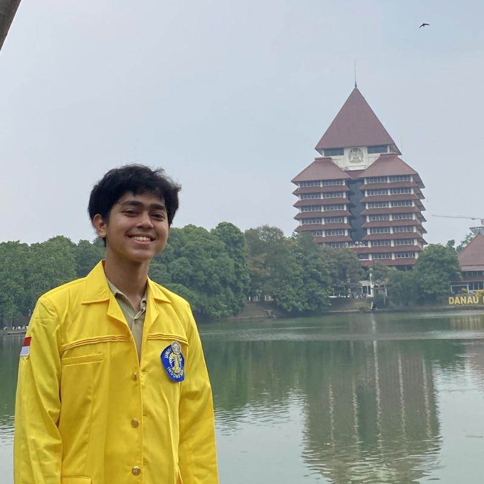

Ekazadex
.
EN
ID
Ekananda
Zhafif Dean
Computer Engineering | Tech & AI Enthusiast
eka-terminal ~ bash
about.sh
skills.py
contact.json
eka@guest:~$

EZD.AVATAR
Active Node
Universitas Indonesia
2023 - Present
MAN 1 Kota Bekasi
2020 - 2023
Programming Languages
Hardware & Tools
All
IoT & Hardware
AI & Software
Dean Frozen Mart
Nov 2024 - Feb 2025
OSIS MAN 1 Kota Bekasi
Oct 2021 - Dec 2022
WhatsApp
+62 812-9662-9495
Email
ekanandadean1@gmail.com
LinkedIn
ekananda-zhafif-dean